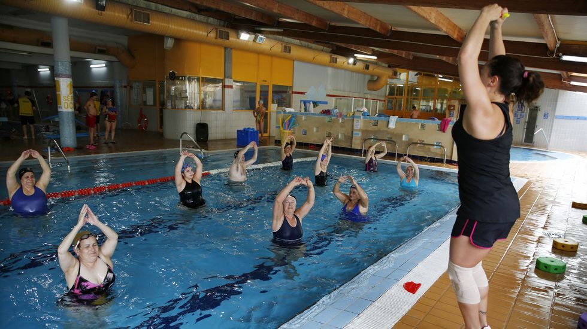
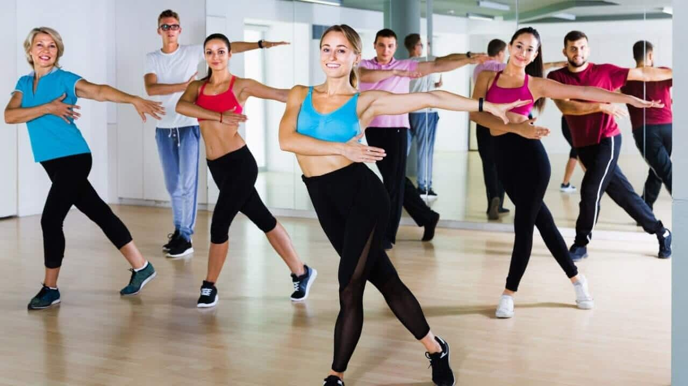
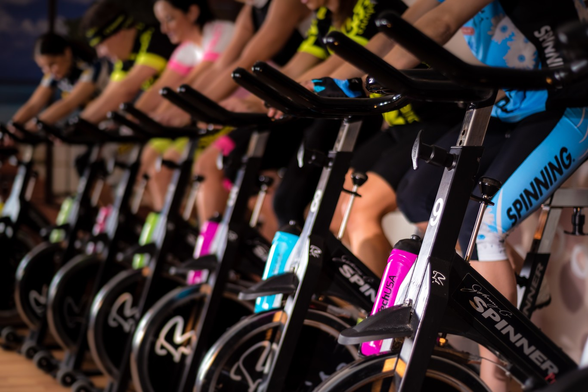
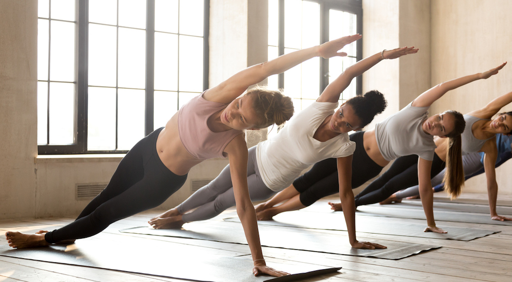

| Servicios | Descripción | Precio | |
|---|---|---|---|
| PERSONAL TRAINER | ¿Quieres tener una experiencia totalmente personalizada? Ahora tenemos a disposición de nuestros clientes el servicio de personal trainer. Auténticos profesionales del deporte te asesorarán en todo momento. Nuestros profesionales estarán contigo en todo momento y también online. Tenemos tablas de ejercicios y dieta a tu disposición, ellos elegirán la que mas se te amolde. |
Nuestros precios varían en función a tu suscripción: Abonados bronce: Tienen la posibilidad de solicitar tablas de entrenamiento y dietas. Abonados silver: Beneficios de bronce y además el entrenador estará contigo 8h a la semana. Abonados gold: Beneficios de silver, el entrenador estará 16h a la semana y contacto online 24/7 |
|
| SESIONES AQUAGYM | Gracias a nuestras dos piscinas, interior y exterior... ¡Tenemos la posibilidad de ofrecerte el servicio de AquaGym todo el año! Entre los beneficios del AquaGym destacan los siguientes:
|
Para poder participar de nuestros servicios de AquaGym, ¡Simplemente tienes que inscribirte a las clases y abonar su coste! Abonados bronce: Deberán abonar 14'99€ por clase. Abonados silver: Deberán abonar 9'99€ por clase. Abonados gold: Deberán abonar 4'99€ por clase. |
 |
| SESIONES DE ZUMBA | Tienes la posibilidad de participar en nuestras clases de zumba con nuestros profesionales. Zumba es una disciplina fitness creada a mediados de los años 1990 por el colombiano Alberto "Beto" Pérez, enfocada por una parte a mantener un cuerpo saludable y por otra a desarrollar, fortalecer y dar flexibilidad al cuerpo mediante movimientos de baile combinados con una serie de rutinas aeróbicas. |
Para poder participar de nuestros servicios de Zumba, ¡Simplemente tienes que inscribirte a las clases y abonar su coste! Abonados bronce: Deberán abonar 9'99€ por clase. Abonados silver: Deberán abonar 4'99€ por clase. Abonados gold: ¡No deberán abonar nada, ya son gold! |
 |
| SESIONES DE BICI | El ejercicio en bicicleta estática es el deporte perfecto para muscular y refinar las piernas y los muslos y perder peso al mismo tiempo. El ejercicio en una bicicleta estática es perfecto para tonificar las piernas, los muslos y los glúteos, pero también los brazos y los músculos abdominales y de la espalda. El entrenamiento en una bicicleta estática puede ayudarte a quemar muchas calorías y, por lo tanto, a perder peso. |
Nuetras clases de bici son gratuitas para todos nuestros suscriptores. |  |
| SESIONES DE YOGA | Como yoga se denomina el conjunto de disciplinas y prácticas de tipo físico y mental cuyo objetivo es lograr el equilibrio entre cuerpo y mente, como camino para alcanzar la iluminación y la unión con el Absoluto. Como tal, la palabra proviene del sánscrito “yoga”, que significa ‘unión’, ‘esfuerzo’. El origen del yoga se ubica en la India, en el valle del Indo. Su antigüedad, no obstante, es difícil de determinar, pero se especula que podría tener entre tres y cinco mil años. |
Para poder participar de nuestros servicios de Yoga, ¡Simplemente tienes que inscribirte a las clases y abonar su coste! Abonados bronce: Deberán abonar 14'99€ por clase. Abonados silver: Deberán abonar 9'99€ por clase. Abonados gold: Deberán abonar 4'99€ por clase. |
 |